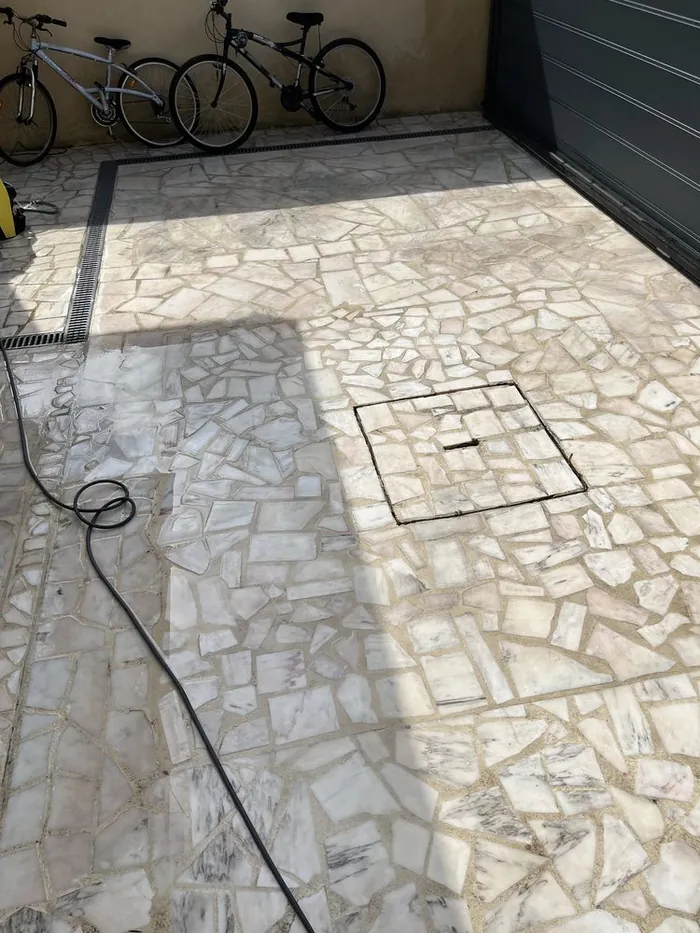
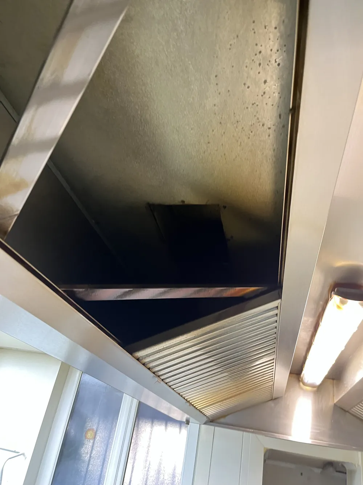

Entreprise de nettoyage en Seine-et-Marne (77)
De Chelles à Meaux, de Melun à Fontainebleau, nous intervenons dans tout le département, y compris sur les villes nouvelles de Marne-la-Vallée. Son nord-ouest est l'un de nos secteurs les plus proches : notre adresse de référence est à la limite du département.
Ce que nous faisons le plus en Seine-et-Marne
Le 77 est le plus vaste département francilien : nous y groupons volontiers plusieurs interventions sur une même journée, ce qui reste le meilleur moyen de contenir les frais de déplacement. Le textile, l'automobile à domicile et la vitrerie y dominent.
Nous venons avec nos machines, nos produits, notre eau et notre électricité : vous n'avez rien à fournir. Les frais de déplacement — 5 € par tranche de 5 km depuis notre adresse de référence à Tremblay-en-France (93) — vous sont annoncés avant que vous validiez le devis.
Les villes où nous intervenons
- Chelles
- Meaux
- Melun
- Pontault-Combault
- Champs-sur-Marne
- Torcy
- Bussy-Saint-Georges
- Lagny-sur-Marne
- Roissy-en-Brie
- Ozoir-la-Ferrière
- Fontainebleau
- Provins
Cette liste n'est pas exhaustive : nous couvrons l'ensemble du département. Appelez-nous pour vérifier notre disponibilité dans votre commune.
Le département le plus étendu
La Seine-et-Marne représente à elle seule près de la moitié de la superficie francilienne. D'un bout à l'autre, les temps de trajet n'ont rien de comparable, et nos délais varient en conséquence : proches sur l'ouest du département, plus longs vers l'est et le sud.
Nous intervenons partout, mais nous sommes francs sur le délai plutôt que de promettre une réactivité que le kilométrage rend impossible.
Pavillonnaire, artisanat et locaux d'activité
Le terrain mêle habitat individuel avec de grandes surfaces vitrées et un tissu de locaux d'activité et d'entrepôts. L'entretien de ces locaux y est fréquent, porté par la construction neuve.
Comme en Essonne, le conseil qui compte est de grouper. Une venue qui traite les vitres, le canapé et la voiture vaut mieux que trois déplacements successifs, pour nous comme pour votre facture.
Ce que nous proposons en Seine-et-Marne
Fin de chantier et fin de bail
Après travaux ou avant l'état des lieux de sortie : résidus de chantier, vitrerie de première mise en service, four, joints et calcaire. Un logement vide est le seul moment où tout est accessible — et le seul où un tiers va tout regarder.
Découvrir la prestation
sur devisNettoyage haute pression
Terrasses, allées, cours, parkings et façades accessibles depuis le sol : la pression réglée sur le support, jamais l'inverse.
Découvrir la prestation
sur devisDégraissage de hottes
Hotte, filtres, bac à graisse et conduits jusqu'au ventilateur : le circuit complet, dégraissé de nuit. Ramonage annuel et livret d'entretien exigés par l'arrêté du 25 juin 1980 en ERP.
Découvrir la prestation sur devisDécapage de sols à la monobrosse
PVC, linoléum, carrelage, béton, moquette : retrait de l'ancienne protection, récurage des joints, pose d'une émulsion neuve ou lustrage. Le revêtement est identifié et testé avant le premier passage, pas après.
Découvrir la prestation sur devisNettoyage de vitres
Fenêtres, baies vitrées, vérandas et vitrines nettoyées à l'eau osmosée : sans minéraux, l'eau sèche sans rien déposer.
Découvrir la prestation sur devisNettoyage d'entreprise
Bureaux, commerces, salles de restaurant et parties communes, en passage quotidien, hebdomadaire ou mensuel, aux horaires qui vous arrangent.
Découvrir la prestationVous savez qui va sonner à votre porte
MathClean est une entreprise individuelle. La personne que vous avez au téléphone est celle qui vient, et celle qui reviendra au passage suivant. Il n'y a ni centre d'appels, ni sous-traitance, ni intervenant différent à chaque fois.
Ce n'est pas un argument de confort. C'est ce qui fait qu'au deuxième passage, on sait déjà où est le compteur, quel sol ne supporte pas l'eau, quelle pièce ne doit pas être ouverte, et que vous n'avez pas à réexpliquer votre installation à quelqu'un qui la découvre.
Les horaires d'intervention sont ceux qui vous arrangent : 7j/7, de 8h à 20h, week-ends et jours fériés compris, et de nuit pour les commerces et les cuisines professionnelles — sans supplément.
Les éléments que vous pouvez contrôler
- SIRET : 924 565 990 00010 — l'établissement et son activité se vérifient en ligne sur l'annuaire des entreprises de l'État.
- SIREN : 924 565 990, entreprise individuelle, dirigeant Mathéo Céleste.
- Adresse de référence : 5 rue Nicolas-Copernic, 93290 Tremblay-en-France — la même que celle du registre.
- Avis : publiés sur notre fiche Google, avec le nom et la date de chacun. Nous n'en reproduisons aucun ici sans sa source.
- TVA non applicable, article 293 B du code général des impôts : nos prix sont nets, il n'y a pas de TVA à ajouter — ni, pour un professionnel, de TVA à récupérer.
Sept questions à poser — à nous comme à n'importe qui d'autre
Cette liste sert aussi si vous ne nous retenez pas. Un prestataire qui répond mal à trois de ces questions vous coûtera plus cher que l'écart de devis.
1. Un SIRET, et lequel ? Il doit être donné sans hésiter et se vérifier en ligne. Un numéro communiqué de mauvaise grâce, ou une entreprise dont l'activité déclarée n'a rien à voir avec la prestation, sont deux signaux suffisants pour arrêter là.
2. Un devis écrit, avant l'intervention ? Sur le dépannage, la réparation et l'entretien du bâtiment, c'est une obligation, pas une faveur : l'arrêté du 24 janvier 2017 l'impose quel que soit le montant. Un prix annoncé uniquement au téléphone n'engage personne.
3. Un acompte est-il demandé ? Sur une intervention de quelques heures, il n'a pas de justification. Il transfère le risque sur vous, et il est l'outil habituel de qui ne compte pas revenir.
4. Le prix peut-il bouger, et dans quels cas ? La réponse doit être précise. « Ça dépend de ce qu'on trouve » signifie que le devis n'en est pas un.
5. Qu'est-ce qui ne sera pas fait ? La question la plus utile, et celle qu'on pose le moins. Un prestataire sérieux a des limites et les énonce. Celui qui dit oui à tout n'a pas regardé votre installation.
6. Que reste-t-il par écrit après ? Une attestation ou un compte rendu daté, disant ce qui a été fait et ce qui ne l'a pas été. C'est ce document que vous présenterez à un contrôle, à un syndic ou à un assureur — et c'est lui qui a de la valeur, pas la facture.
7. Qui viendra réellement ? La personne au téléphone, un salarié, ou un sous-traitant que vous ne connaîtrez qu'en ouvrant la porte ? La réponse change ce que vous pouvez attendre en cas de problème.
Un besoin en Seine-et-Marne ?
Devis gratuit et sans engagement, réponse sous 24 h. Aucun acompte à verser.